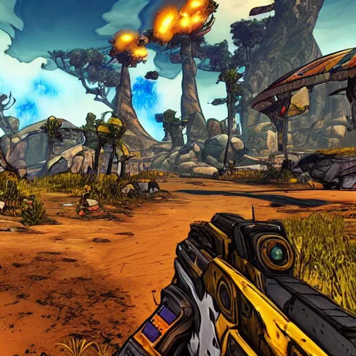

in borderlands 2 you can find many types of guns with many types of elements. maybe a boring old gun doesn't interest you maybe you need too give your enemies shocks or melt them with corrosive. there are billions of different gun options and parts. collect the one that suits you best!
Loot! Loot! Loot! there is always loot get richer in guns, ammo, money or even eridium
a captivating story that makes you love and feel with all the characters. choose between 6 different vault hunters. each of them with unique personalities and moral compasses. Head out too pandora and stop handsome jack from opening the vault with help from characters like Roland, Tiny Tina, Brick and lilith
experience the unique humor borderlands have too offer. maybe you want too met the diamond pony butt stallion, or you wanna hear the psycho's scream about meat bycicles. borderlands has a dark grownup humor sometimes so viewer discretion advised
Tired of traveling Pandora alone? Bring a friend! Borderlands supports up too four player multiplayer. explore, loot and kill together
ever been too Moxies? nows the time. waste hundreds of dollars at the casino or tip moxi herself. gambling can grant you guns, money, eridium or bombs that might kill you
experience the hundreds of side stories each wilder then the last one. you'll never feel bored with borderlands
have you ever met a explosive obsessed man? or maybe you like the unlicensed doctor? or maybe a money hungry gun sales man. you can even meet a teen who loves destruction or the most annoying robot you'll ever meet!
This game has the most charming design choice combining the cel style with rough lines making the game seem childlike but also grown up. it has beautiful scenery and you will most likely end up looking at the beauty for hours
like any game this game offers a wide Verity of stuff too collect and you are awarded handsomely for collecting them
the rarity system is easy too understand. grey = common, green = uncommon, blue = rare, purple = super rare, gold = legendary, rainbow = ultra legendary. providing satisfying sounds when you find higher rarity items you wont find a greater source of serotonin
eridium is a new source of currency in borderlands first introduced in borderlands 2. you can buy special items or even feed them too a horse.